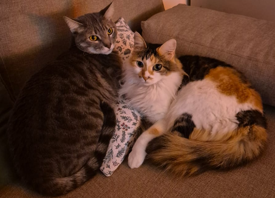
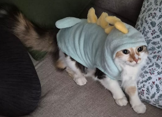
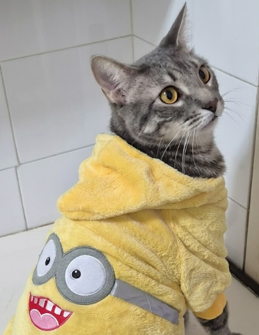

En las sombras de una antigua casa abandonada, el silencio del lugar solo se rompía por un sonido que llamó la atención de un vecino: maullidos constantes de auxilio. Gracias a que nos alertó rápidamente sobre la situación, nuestro equipo pudo intervenir y llegar al lugar.

Escondidos en un rincón oscuro y lleno de polvo, encontramos a Coco y Zuri. Estaban aterrorizados, deshidratados y bastante desnutridos. Zuri, más tímida, se acurrucaba detrás de Coco, y mostraba sus filosos dientes cuando intentabamos acercarnos.


Una vez a salvo en la fundación, recibieron atención médica integral. Fueron desparasitados, vacunados y esterilizados. A medida que pasaban los días en nuestro refugio, su vínculo se hacía más evidente; dormían entrelazados y compartían hasta el mismo plato de comida. Sabíamos que darlos en adopción por separado les rompería el corazón.
Las adopciones conjuntas siempre son un desafío, pero la magia ocurrió. Una familia de Villa Devoto, que inicialmente buscaba un solo compañero felino, conoció su historia y no pudo resistirse. Entendieron que Coco y Zuri eran un "paquete indivisible" de amor. Hoy son los reyes de la casa, demostrando que donde hay lugar para uno, siempre hay lugar para dos.